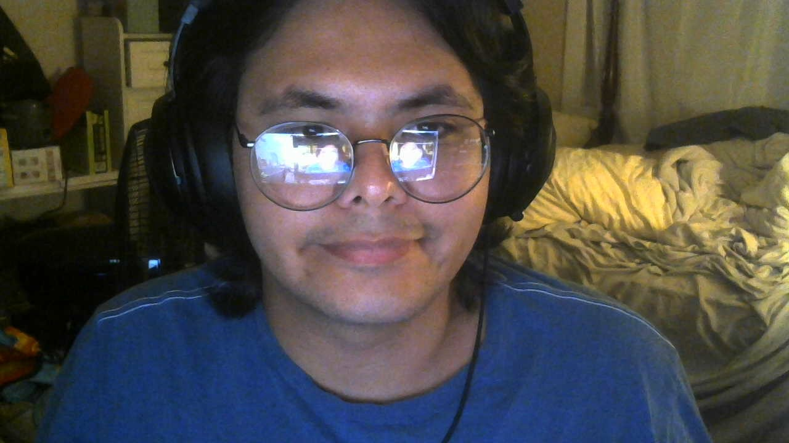
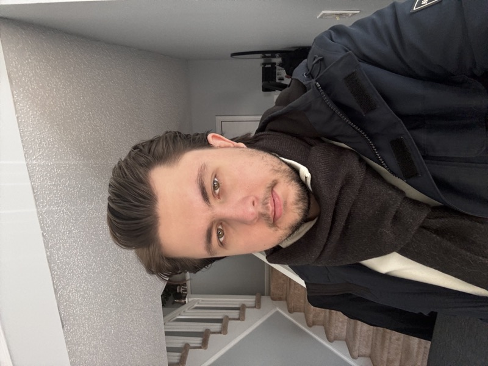
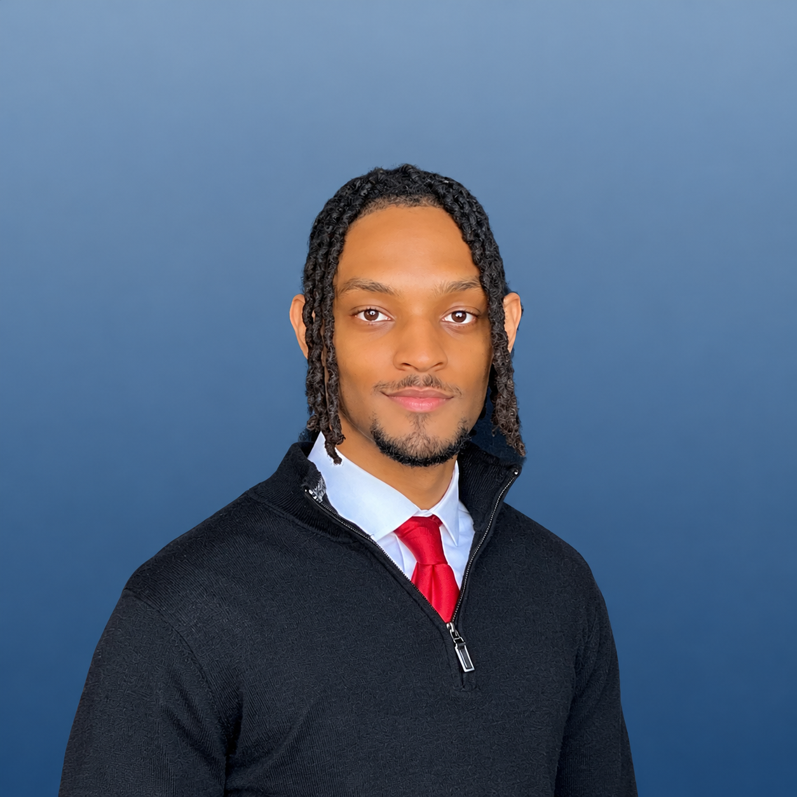
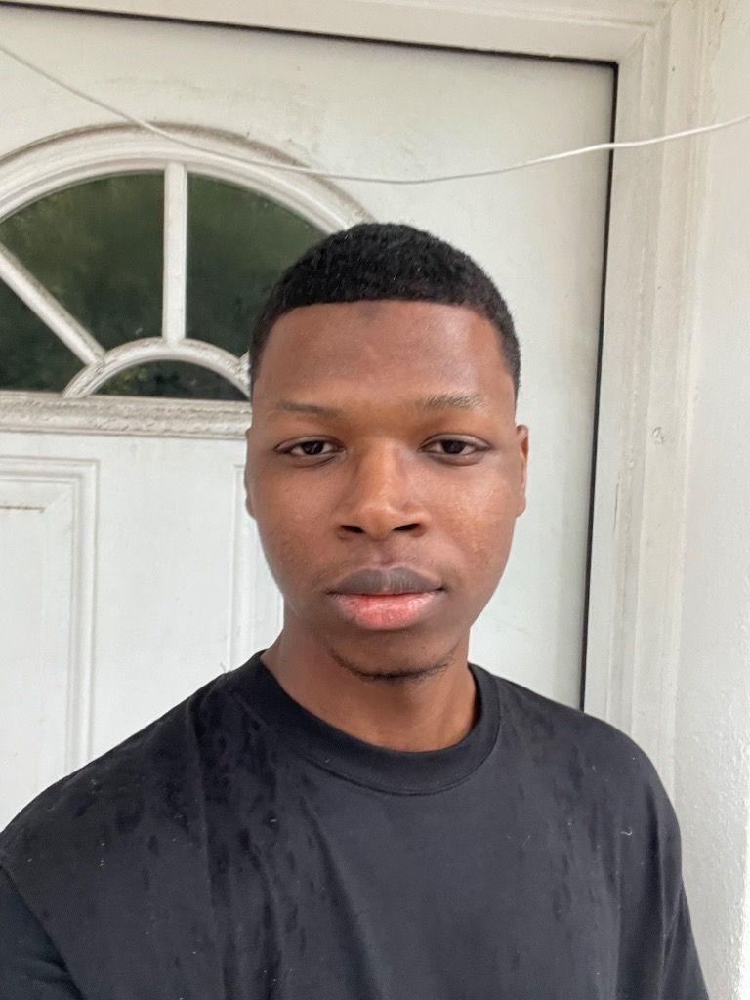
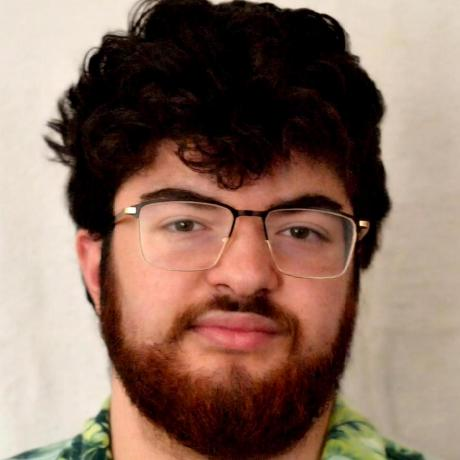
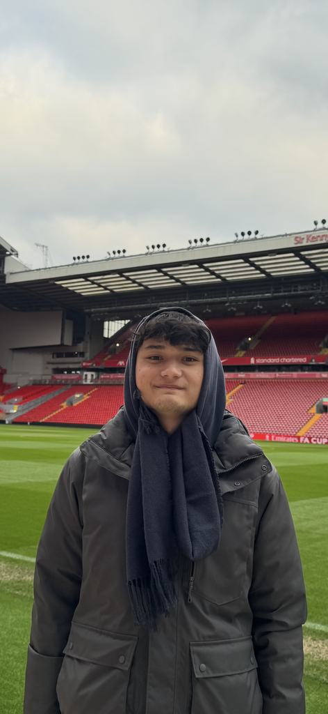

Meet the Team
Hope Chandler

Hope Chandler is the Team lead / Project author.
Max Adams

Max Adams is the webmaster and UI specialist for this project.
Hamza Guzel

Hamza Guzel is the front-end developer.
Monte Jacob

Monte Jacob is the back-end developer.
Mohamed Datt

Mohamed Datt is an undergraduate Computer Science student at Old Dominion University. He serves as the Database Specialist and Architecture Lead for Team Iron on the OT GoalAssist project. Mohamed is responsible for designing the relational data schema, Entity Relationship Diagrams (ERD), standardized assessment score storage, and session de-identification protocols to maintain strict data integrity and HIPAA security standards.
Austin Jones

Austin Jones is the full-stack developer.
Trevor Prince

Trevor Prince is the documentation specialist.